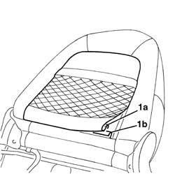
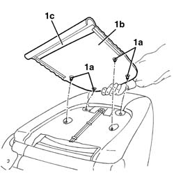

7045A98 front seat rear pouch panel, lh or rh - r r
- Path
- Procedures > 70 FITTINGS > 7045 FRONT SEATS > 7045A front seat assembly > 7045A98 front seat rear pouch panel, lh or rh - r r
- Kind
- repair procedure (removal / refitting; the operation number is the code)
- Applies to
- all engines; all production periods
- Interactive page
- https://sloeber94.github.io/elrnDB-a147/en/#/3025865
Applies to: all engines; all production periods; only with equipment: GTA
 Removing
Removing
 Refitting
Refitting7045A10 l/h or r/h front seat (one) - r+r
1. Release the lower end (1a) of the pocket panel from the retainer (1b) on the structure.

Applies to: all engines; all production periods; only with equipment: GTA
1. Using clippers, cut the retainers (1a) and remove the rear pocket panel (1b). If necessary, remove the retainers (1a) via the opening (1c).

Applies to: all engines; all production periods; only with equipment: GTA
Refitting
RemovingCheck that the rear pocket panel is not damaged.
1. Place the rear pocket panel (1a) in position and secure it using new retainers (1b). Fit the retainers (1b) via the opening (1c).
Applies to: all engines; all production periods; only with equipment: GTA
Connect the lower end of the pocket panel to the retainer on the structure.
Topics linked from this page (1)
Topics that link to this page (10)
- 5580C44 front side bag module one lh or rh r r
- 5580C86 side bag wiring harness (one) lh or rh - r r or replace
- 7045A38 device for driver`s seat squab lumbar adjustment - r r with seat removed
- 7045A84 Front set BACKREST COVER - R.R. with seat removed
- 7045A85 Front seat BACKREST COVER, left or right - R.R.
- 7045A88 Front seat BACKREST UPHOLSTERY, left or right - R.R. with seat removed
- 7045A89 Front seat BACKREST UPHOLSTERY, left or right - R.R .
- 7045A92 Front seat COVER, left or right - R.R. with seat removed
- 7045A93 Front seat TRIM, left or right - R.R .
- 7045L30 Backrest folding control CABLE/ROD - R.R.